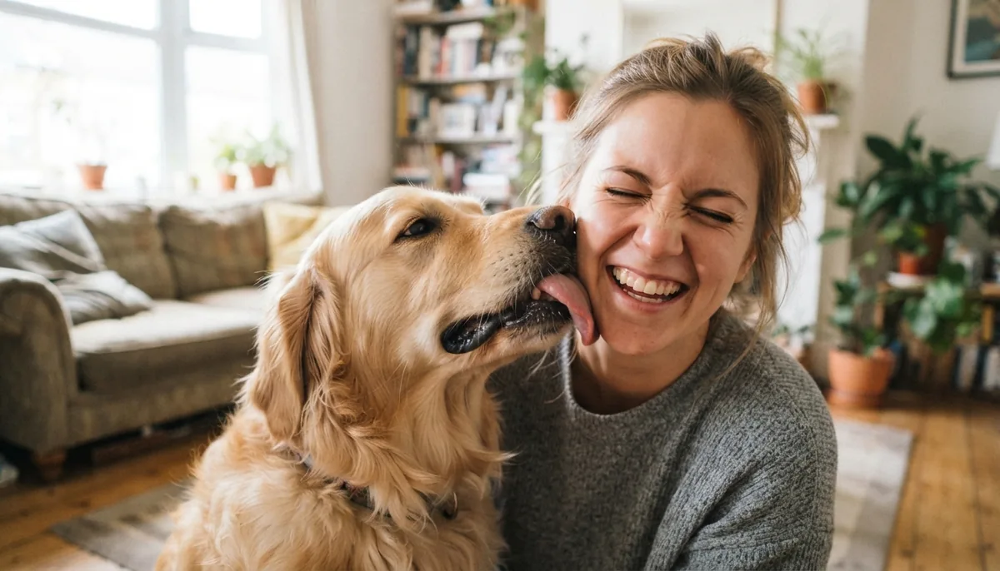

Why Does My Dog Lick Me? 8 Real Reasons Behind Dog Kisses

Whether you call them kisses or a slobbery ambush, dog licks are one of the most universal — and most misunderstood — things dogs do. Licking starts on day one of a puppy's life and never really stops, and it can mean anything from "I adore you" to "you taste like lunch" to "I'm a little anxious right now." Here are the eight real reasons behind it, drawn from guidance by the American Kennel Club, the ASPCA and veterinary behaviorists — plus the few situations where licking is a sign something's wrong.
The 8 reasons dogs lick people
1. Affection — yes, they really are "kisses" Normal
Licking is baked into dogs from birth: mother dogs lick their puppies to groom and comfort them, and puppies lick right back. Between adult dogs, licking the face is a friendly, bonding gesture — and your dog carries that straight over to you. Licking also releases endorphins in the dog's brain, so giving kisses feels calming and pleasant to them, too.
Read the body: loose, wiggly body, soft eyes, relaxed mouth = genuine affection. See our dog body language guide for the full picture.
2. You taste interesting Normal
Human skin is salty from sweat, and hands carry traces of everything you've touched — including that sandwich. Dogs explore the world with their nose and tongue, so a lick is partly a taste test. If the licking spikes after your workout or right after you cook, taste is probably the driver.
3. Attention — because it works Normal (and trained by you)
Lick your hand → you look down, laugh, talk, pet. From the dog's point of view, licking is a reliable button that makes attention happen. Even saying "no, stop!" counts as attention. If your dog licks mostly when you're on your phone or talking to someone else, this is the reason.
4. Appeasement — "we're good, right?" Read the context
In dog language, gentle licking directed at the face or mouth of another dog is a peacekeeping gesture that says "I'm no threat." Dogs offer the same to people, especially after being scolded or when meeting someone new. A dog that licks with a lowered body, tucked tail or pinned ears isn't kissing — it's politely asking for reassurance.
5. Greeting ritual Normal
The over-the-top licking when you walk in the door has ancient roots: wild canid puppies lick the mouths of returning adults (originally to prompt them to share food). In your dog it's simply an enthusiastic "you're back!" ritual, usually paired with a wagging tail and a wiggly body.
6. Self-soothing and stress relief Watch for patterns
Because licking releases feel-good endorphins, some dogs lick you (or blankets, or the sofa) the way people fidget — to calm themselves. Occasional soothing licks are fine. But if licking ramps up during storms, fireworks, or when you're getting ready to leave, it can point to anxiety worth addressing.
7. Empathy — licking your tears Sweet, and real
Many owners notice their dog licks them more when they cry or feel low. Research suggests dogs pick up on human distress and approach with comforting behaviors, and licking is one of the tools in that kit. (Salty tears may help, but the comfort-seeking is well documented.)
8. A medical or compulsive cause Vet check
Licking that is new, intense and hard to interrupt deserves attention — especially if the dog also licks itself, the floor or the air obsessively. Possible culprits include nausea and digestive discomfort, pain, allergies (paw-licking is classic), cognitive decline in older dogs, or true compulsive disorder. A sudden change in licking habits is a reason to call your vet.
Is it safe to let a dog lick your face?
Mostly, yes — with common sense. A dog's mouth isn't "cleaner than a human's" (that's a myth), and dog saliva can carry bacteria. For healthy adults the risk from a cheek lick is very low. Vets do suggest keeping dog tongues away from your mouth, nose and eyes, and away from open cuts, and being more careful with babies, elderly family members and anyone immunocompromised. Washing your hands after a lick-fest is plenty for most households.
How to reduce licking (kindly)
If the kisses are more than you signed up for, don't punish — redirect. It works because licking is usually about attention or arousal:
- Remove the reward: when the licking starts, calmly stand up, turn away, or leave the room for a few seconds. No scolding — just make licking end the fun.
- Redirect the tongue: offer a licking mat, a stuffed puzzle toy, or a training cue ("sit," "touch") that earns attention a better way.
- Reward the pause: pet and praise when your dog greets you without licking, so calm greetings pay better than slobbery ones.
- Burn the energy: a well-exercised dog licks less out of boredom — our games guide has 12 easy ideas.
Consistency matters more than technique: if licking works on one family member, the habit stays.
When to call the vet
Book a check-up if licking is suddenly much more frequent or intense, if your dog compulsively licks itself, surfaces or the air, if paw-licking is constant (allergies are a top cause), or if the licking comes with other changes like appetite loss, drooling or lip-smacking (possible nausea), restlessness, or signs of pain. Sudden behavior changes are one of the earliest ways dogs tell us something is physically wrong.
Frequently asked questions
Does my dog lick me because it loves me?
Often, yes. Licking is a bonding behavior dogs learn from their mothers, and a relaxed dog licking you with a loose, wiggly body and soft eyes is showing affection. But taste, attention and habit are usually mixed in too — dog kisses are rarely just one thing.
Why does my dog lick me when I stop petting it?
That's attention-seeking: the lick is a "keep going" button. If you resume petting every time, you've taught the dog that licking works. Rewarding a calm sit instead will change the habit within a few weeks.
Why does my dog lick my face specifically?
Face-licking is the most social form of dog licking — it mirrors how puppies greet adult dogs and how dogs appease and bond with each other. Your face is also where the interesting smells and tastes are (and where you react the most).
Is excessive licking a sign of anxiety?
It can be. Licking releases calming endorphins, so anxious dogs sometimes lick people, objects or themselves to self-soothe. If licking ramps up around triggers like storms or your departure cues, or comes with yawning, lip-licking and pacing, talk to your vet or a behavior professional.
Should I let my dog lick my wounds?
No. That old belief is a myth — dog saliva can introduce bacteria into broken skin and cause infection. Keep licks away from cuts, scrapes and any healing skin, both yours and the dog's own (that's what recovery cones are for).
By the CanMyPet Editorial Team · Reviewed against guidance from the American Kennel Club (AKC), the ASPCA and veterinary behavior sources · Published July 2026.